Participant
Zhiyuan.Liang
Age: 21
Job: University Student
Engineering student, proficient in using computers.
Evaluation
This page presents the usability testing content from the uploaded analysis document, including participant background, task settings, quantitative results, SUS analysis, and feedback summary.
Usability Testing
Test environment: All participants were in a quiet indoor setting and completed the entire test independently.
Participant
Age: 21
Job: University Student
Engineering student, proficient in using computers.
Participant
Age: 51
Job: Office Worker
With many years of work experience and an interest in new things.
Participant
Age: 30
Job: University Teaching Assistant
Has many years of teaching experience in the field of computer science
Informed Consent Form: Zhiyuan.Liang, Yongzhi.Chen, Yiyi.Kou
Main Task List
Quantitative Data
| Participant | Completion Time | Task Completion Rate | Error Rate |
|---|---|---|---|
| Zhiyuan.Liang | 141s | 100% | 0% |
| Yongzhi.Chen | 180s | 100% | 0% |
| Yiyi.Kou | 175s | 100% | 0% |
| Average Value | 165.333s | 100% | 0% |
SUS Score
| Participant | 1 | 2 | 3 | 4 | 5 | 6 | 7 | 8 | 9 | 10 | Total score of SUS |
|---|---|---|---|---|---|---|---|---|---|---|---|
| Zhiyuan.Liang | 4 | 2 | 5 | 1 | 4 | 2 | 5 | 2 | 4 | 1 | 85 |
| Yongzhi.Chen | 4 | 1 | 5 | 2 | 4 | 2 | 5 | 2 | 4 | 2 | 82.5 |
| Yiyi.Kou | 5 | 2 | 5 | 1 | 5 | 2 | 5 | 2 | 4 | 1 | 90 |
| Variance | 0.3 | 0.3 | 0 | 0.3 | 0.3 | 0 | 0 | 0 | 0 | 0.3 | 14.85 |
| Mean | 4.3 | 1.7 | 5.0 | 1.3 | 4.3 | 2.0 | 5.0 | 2.0 | 4.0 | 1.3 | 85.83 |
Analysis Of The Results Of SUS
Q3 (ease of use): mean 5.00, variance 0.00; Q7 (learnability): mean 5.00, variance 0.00; Q8 (cumbersome feeling): mean 2.00, variance 0.00. Users unanimously agree that the system is intuitive and simple to operate.
Q2 (unnecessary complexity): mean 1.67, variance 0.33. A small number of users perceive slight complexity; simplifying operation paths and lowering cognitive load is suggested.
Q5 (function integration): mean 4.33, variance 0.33; Q6 (inconsistency): mean 2.00, variance 0.00. Functions are well-connected, the interface logic is consistentwith no confusing experience.
Q1 (usage intention): mean 4.33, variance 0.33; Q9 (operation confidence): mean 4.00, variance 0.00; Q4 (technical support dependence): mean 1.33, variance 0.33. Users are willing to use the system frequently and can operate it independently without technical assistance.
Q10 (pre-learning required): mean 1.33, variance 0.33. Some users still need minor learning to get started; enhanced onboarding guidance and one-step prompts are recommended.
Feedback Summary
In addition to the SUS test, we also conducted a more detailed survey of the respondents and asked them to provide suggestions for modifications.
Source: Usability Testing results analysis.docx
Iterative Refinement
Iteration 1
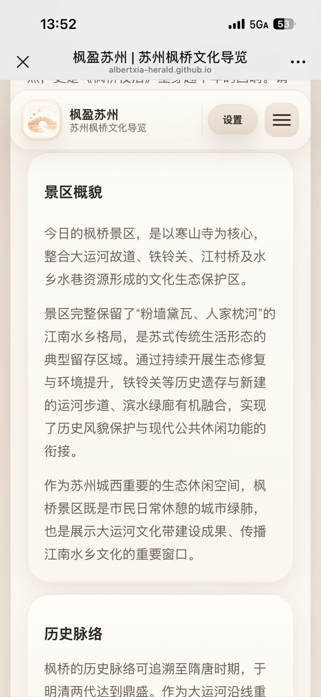
At the beginning of the web page, an overview of the scenic area and its historical introduction are designed to help users quickly form an overall impression of the area.
Iteration 2
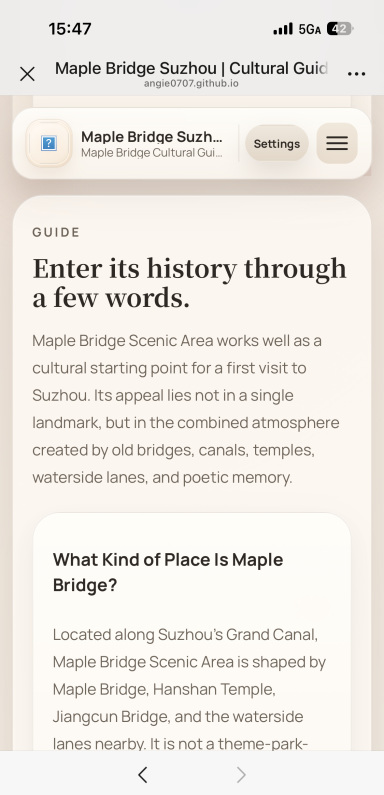
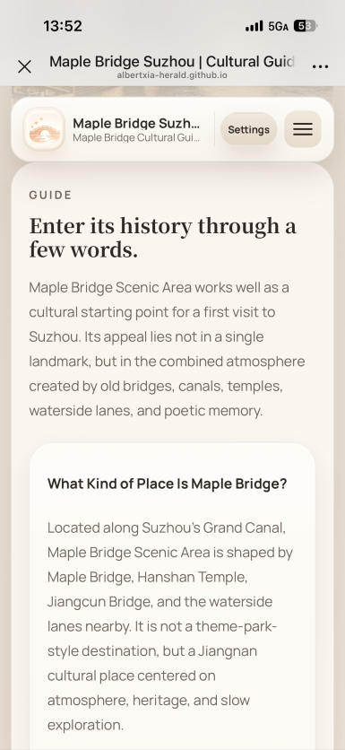
Reduce the size of the English font by one level.
Iteration 3
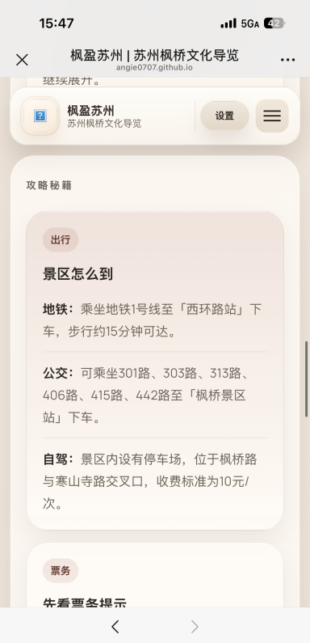
The route details function has been added. By clicking the button, you can view more detailed route instructions in the pop-up window.
Iteration 4
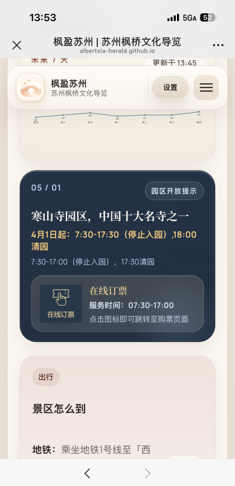
Added the online ticket booking function, allowing users to directly navigate to the official ticket purchasing page for purchase.
Iteration 5
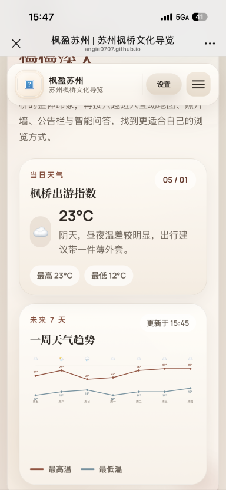
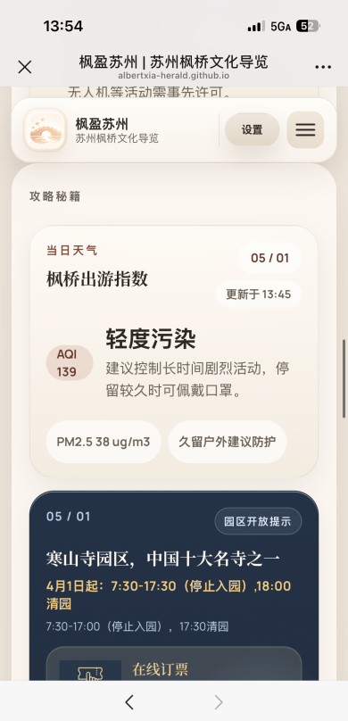
Moved the weather forecast function from the top of the page to the "Gaming Tips" section.
Iteration 6
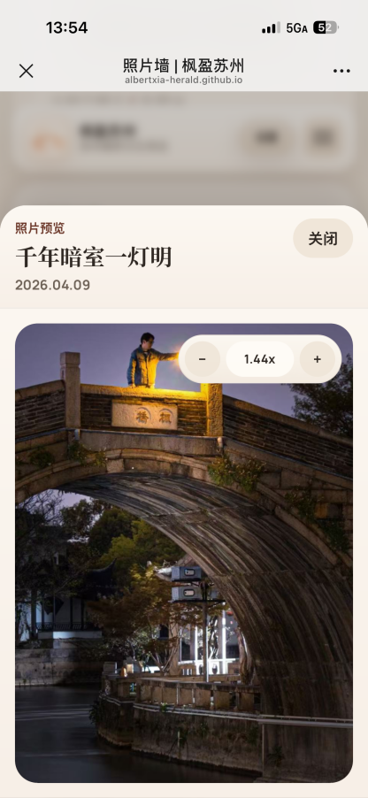
Added the function of zooming in and out of photos. It can adjust the photo size by pressing the button, or you can directly use two fingers on the phone to make the adjustment.
Iteration 7
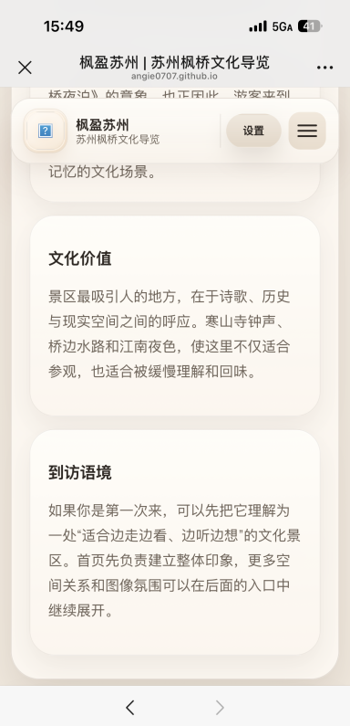
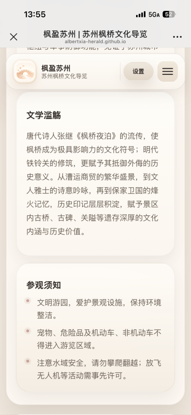
Added a "Visiting Instructions" section for tourists.
Iteration 8
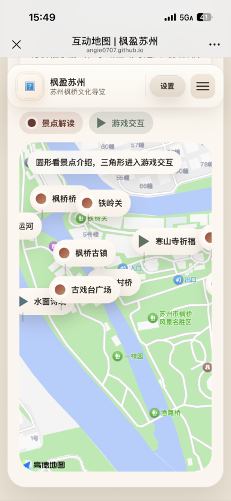
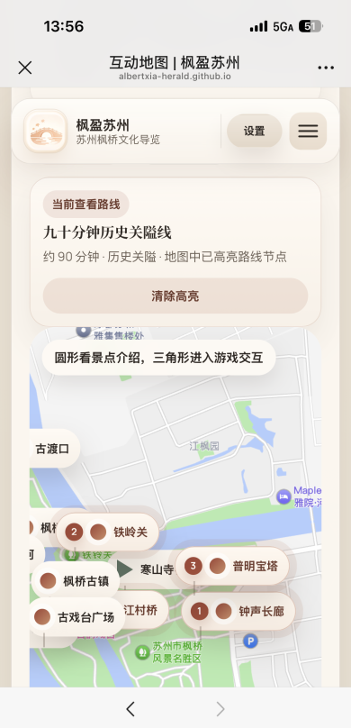
After generating the personalized route, you can choose to view the route on the map. In this way, tourists can directly see on the map every scenic spot along the highlighted route as well as the sequence of visits.
Iteration 9
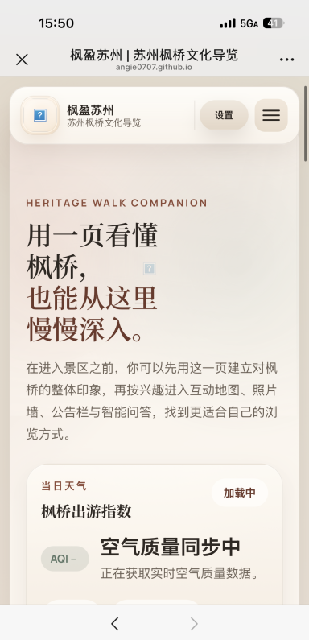
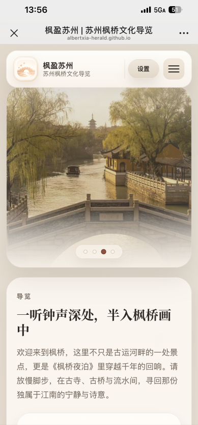
The top section of the page has been simplified. The lengthy text has been removed and replaced with a carousel of photos of Maple Bridge, making the entire web page more refreshing.
Iteration 10
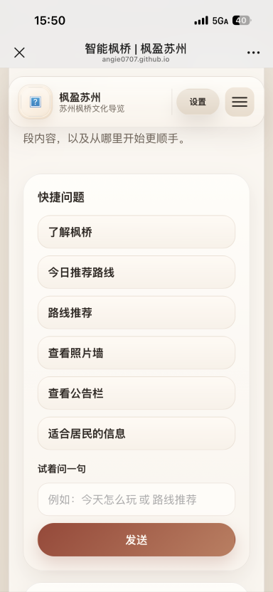
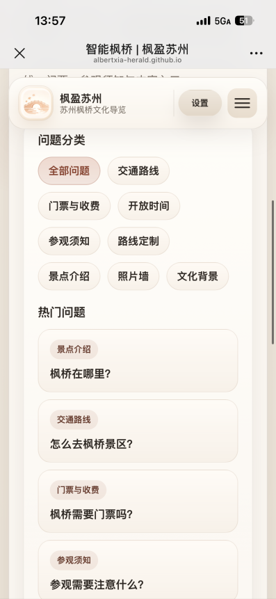
The function of "Smart Maple Bridge" has been enhanced, enabling it to answer more questions.
Source: Iterative Refinement.docx
System Implications
Social Implications
Our design plays a vital role in keeping history alive. By digitizing the rich historical, literary, and architectural heritage of Maple Bridge, such as the legacy of Zhang Ji's famous poem "A Night Mooring by Maple Bridge", we are making ancient culture accessible and engaging for a modern, potentially younger demographic. Features like the "Interactive Map" and "Photo Wall" transform passive sightseeing into an active, shared community experience.
The inclusion of a bilingual toggle (Chinese/English) has strong positive social implications. It breaks down language barriers, allowing international tourists to understand and appreciate local Suzhou culture. This not only promotes cross-cultural empathy and education but also supports the local tourism economy by making the scenic area welcoming to a broader audience.
Our platform highlights Maple Bridge not just as a tourist trap, but as a "city lung" and ecological space for local citizens. The "Notice Board" feature helps build a bridge between the scenic area management and the local community, keeping residents informed about events and park operations.
Ethical Implications
One of the strongest ethical choices in our design is the inclusion of an Elderly Mode. As digital guides become the standard for tourism, older generations are often left behind due to complex UIs or small text. Designing specifically for seniors demonstrates a commitment to digital equity, ensuring that technological advancement does not result in the exclusion of vulnerable user groups.
Through the "Visitor Guidelines" integrated into the platform, our design gently nudges users toward ethical behavior, such as respecting the environment, adhering to water safety, and restricting drone usage. As a UI/UX designer, we are using the platform to advocate for the physical preservation of the historical site, ensuring that increased foot traffic does not harm the ecosystem.
The inclusion of the Smart Agent and location-based services, like real-time weather and navigation, introduces important ethical considerations regarding user data. For this design to remain ethical, it is crucial that user location data is collected transparently, used only for necessary features, and not exploited. Furthermore, the AI assistant must be designed to provide accurate, unbiased historical information without hallucinating facts, ensuring users are educated truthfully.
Source: Reflection.txt
Technical Reflection
1. Core Logic Generating
I am a student of a human centered development course, and the task of the course is to develop a webpage about Fengqiao.
Based on our user survey, we have designed the following features:
We need you to think about an architecture that meets the following conditions:
2. Code Verification
The code that was generated by AI was tested at unit, integration, and system levels.
For unit testing, the route recommendation function was tested independently to ensure that a specific combination of duration and preference, such as “90 minutes” and “historical route”, returned the correct route.
For integration testing, the route-selection UI was tested together with the recommendation logic to confirm that clicking the time and preference buttons correctly updated the recommendation panel.
For system testing, an end-to-end test simulated a complete user journey: entering the interactive map page, selecting a recommended route, checking the result, and navigating to the photo wall page.
3. Ethical Considerations
During the project development process, AI mainly helped us generate coding ideas, webpage text, image style prompts, video scripts, and analysis frameworks. However, all AI-generated outputs were reviewed and revised by team members.
We did not directly copy AI results as the final outcome. Instead, we selected and adjusted them according to the project requirements, user feedback, and the actual functions of the website.
This reflects the principle of human oversight. In other words, AI provided suggestions, but the final decisions were made by the team. UNESCO also emphasizes that AI systems should maintain human supervision and accountability.
In visual generation, we did not ask AI to directly imitate specific artists, commercial brands, films, or copyrighted visual styles. Instead, the generated images and videos focused on general cultural atmosphere, such as “Jiangnan ancient town”, “warm sunset lighting”, “red maple elements”, and “traditional architectural layers”, rather than copying any existing work.
In webpage development, AI-generated code was also manually integrated and modified by the team. This ensured that the code served our own project structure instead of simply copying other websites. In this way, we reduced copyright risks and maintained the originality of the project.
During the project analysis stage, AI helped us organise questionnaire feedback, summarise user needs, and identify possible PBIs and optimisation directions. However, we did not allow AI to fabricate user feedback, testing results, or project conclusions.
Therefore, our responsible approach was as follows:
Sources: 1.txt, 2.txt, 3.txt, 4.txt, 5.txt, 6.txt
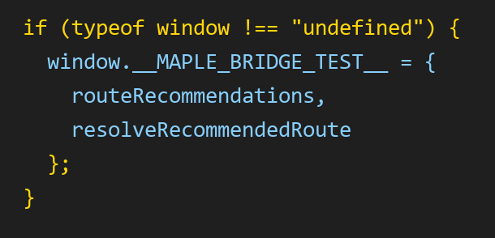
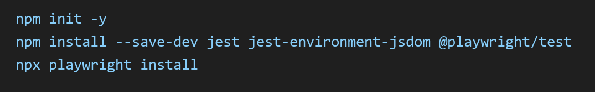
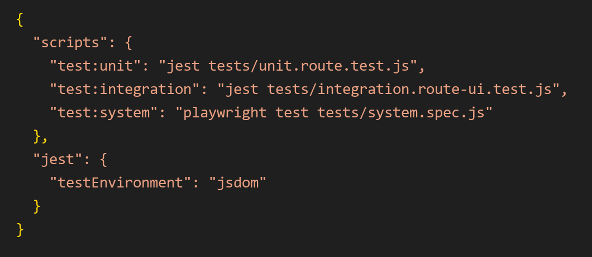
beforeEach(() => {
document.body.innerHTML = `
<div id="amap-container"></div>
<div class="map-surface"></div>
<div data-map-status></div>
<div data-map-loading></div>
<div data-map-fallback></div>
<section id="route-recommend-panel"></section>
<div id="route-time-options"></div>
<div id="route-preference-options"></div>
<article id="route-result-inline"></article>
<div id="route-modal"></div>
<div id="route-modal-body"></div>
<button id="route-modal-close"></button>
<div id="map-modal"></div>
<div id="map-modal-body"></div>
<button id="map-modal-close"></button>
<div id="map-modal-kicker"></div>
<section id="map-explorer"></section>
<div data-route-active hidden></div>
<span data-route-active-kicker></span>
<strong data-route-active-title></strong>
<p data-route-active-meta></p>
<button data-route-active-clear></button>
`;
window.MAPLE_BRIDGE_I18N = {
getLanguage: () => "zh",
text: (value) => {
if (typeof value === "string") return value;
return value.zh || value.en || "";
}
};
window.MAPLE_BRIDGE_AMAP_CONFIG = {};
jest.resetModules();
require("../interactive-map.js");
});
test("returns the exact 90-minute history route when time and preference match", () => {
const { resolveRecommendedRoute } = window.__MAPLE_BRIDGE_TEST__;
const route = resolveRecommendedRoute("90分钟", "历史关隘");
expect(route).toBeDefined();
expect(route.id).toBe("route-90-history");
expect(route.title).toBe("九十分钟历史关隘线");
expect(route.time).toBe("90分钟");
expect(route.preference).toBe("历史关隘");
});beforeEach(() => {
document.body.innerHTML = `
<section id="route-recommend-panel">
<div id="route-time-options"></div>
<div id="route-preference-options"></div>
<article id="route-result-inline" hidden></article>
</section>
<div id="amap-container"></div>
<div class="map-surface"></div>
<div data-map-status></div>
<div data-map-loading></div>
<div data-map-fallback></div>
<div id="route-modal" aria-hidden="true"></div>
<div id="route-modal-body"></div>
<button id="route-modal-close"></button>
<div id="map-modal" aria-hidden="true"></div>
<div id="map-modal-body"></div>
<button id="map-modal-close"></button>
<div id="map-modal-kicker"></div>
<section id="map-explorer"></section>
<div data-route-active hidden></div>
<span data-route-active-kicker></span>
<strong data-route-active-title></strong>
<p data-route-active-meta></p>
<button data-route-active-clear></button>
`;
window.MAPLE_BRIDGE_I18N = {
getLanguage: () => "zh",
text: (value) => {
if (typeof value === "string") return value;
return value.zh || value.en || "";
}
};
window.MAPLE_BRIDGE_AMAP_CONFIG = {};
jest.resetModules();
require("../interactive-map.js");
});
test("clicking route filters displays the correct route recommendation", () => {
const timeButton = document.querySelector('[data-route-time="90分钟"]');
const preferenceButton = document.querySelector('[data-route-preference="历史关隘"]');
const result = document.querySelector("#route-result-inline");
expect(timeButton).not.toBeNull();
expect(preferenceButton).not.toBeNull();
timeButton.click();
preferenceButton.click();
expect(result.hidden).toBe(false);
expect(result.textContent).toContain("九十分钟历史关隘线");
expect(result.textContent).toContain("江村桥");
});const { test, expect } = require("@playwright/test");
test("user can select a route on the interactive map page and then open the photo wall", async ({ page }) => {
// Open the interactive map page
await page.goto("http://127.0.0.1:5500/interactive-map.html");
// Check that the route recommendation section is visible
await expect(page.locator("#route-recommend-panel")).toBeVisible();
// Select time and preference
await page.getByRole("button", { name: /90分钟/ }).click();
await page.getByRole("button", { name: /历史关隘/ }).click();
// Check whether the recommended route is displayed
await expect(page.locator("#route-result-inline")).toBeVisible();
await expect(page.locator("#route-result-inline")).toContainText("九十分钟历史关隘线");
// Navigate to photo wall
await page.getByRole("link", { name: "照片墙" }).click();
// Check whether photo wall page loads correctly
await expect(page).toHaveURL(/photo-wall\.html/);
await expect(page.locator("#photo-upload-input")).toBeAttached();
await expect(page.locator("#gallery-grid")).toBeVisible();
});Citation
Source: docs/Citation.txt